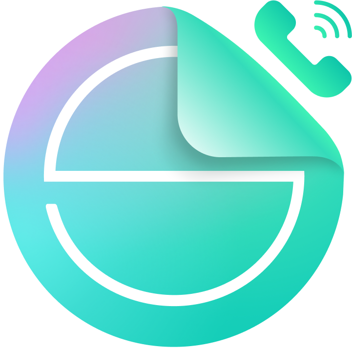

Установка приложения RemsCall
Для Android:
- Откройте сайт в браузере Chrome.
- Нажмите на иконку меню (⋮) в правом верхнем углу.
- Выберите «Установить приложение» или «Добавить на главный экран».
- Подтвердите установку.
Для iOS:
- Откройте сайт в Safari.
- Нажмите на кнопку «Поделиться»
 .
. - Выберите «На экран "Домой"» (Add to Home Screen).
- Подтвердите добавление.